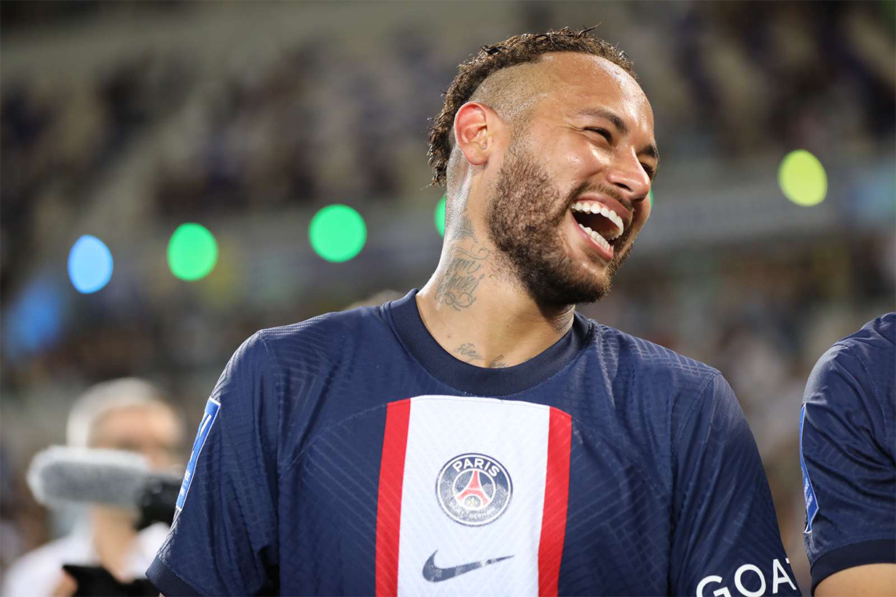
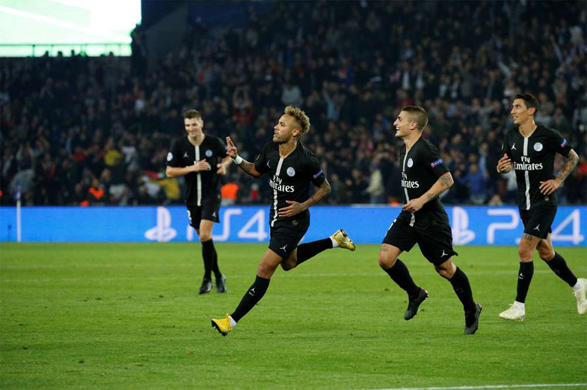
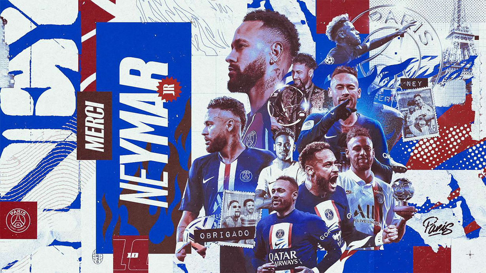

The Brazilian No.10 officially leaves Paris Saint-Germain. A look back at six crazy years of success, passion and emotion.
In 2017, after a summer tour in Miami, Paris Saint-Germain pulled off a transfer that got the whole planet talking: Neymar Jr signed for the club from the capital for a record figure. An arrival that drew attention from across the world, with global TV crews focusing their reporting on Paris and the Club’s new recruit. The Brazilian received an exceptional welcome from the Paris Saint-Germain fans, who travelled en masse to the Parc des Princes, for what has become a historic day.
His press conference at the Parc des Princes, alongside Paris Saint-Germain President, Nasser Al-Khelaïfi, on Friday 4 August 2017 was an event that was broadcast across the four corners of the globe. His first steps in Rouge et Bleu, closely followed by the PSG TV cameras, remain one of the most viewed features in the history of the club.
Officially presented at the Parc the next day (5 August, during the visit of Amiens on Matchday 1) will remain an indelible moment in the memories of all football fans.
Neymar Jr made his debut in his new colours one week later at Guingamp. He quickly settled into the team, picking up an assist and a goal in his first match for the club, before he went to town on Matchday 3 against Toulouse at the Parc des Princes. Skills, goals, assists... Neymar Jr demonstrated his full repertoire and got the crowd to their feet, both in Paris and beyond. Just a few weeks later, he was joined by Kylian Mbappé, to create an attacking line-up that caught the attention of the whole of Europe.
Ney shone on both the domestic and continental scene, with notably impressive performances against Bayern and Celtic. Unfortunately, his season ended prematurely, but he still took home a Ligue 1 winners medal, on top of the Coupe de la Ligue and Coupe de France titles.
The Brazilian prodigy left his mark on everyone he came across as the matches went by. Despite struggling wit h injuries, he managed to pull off certain feats that will never be forgotten. Like the goal he scored against Strasbourg on 14 September 2019, with a magical acrobatic effort at the end of the match. Or the hat-trick he scored against Red Star Belgrade at the Parc des Princes in the UEFA Champions League Group Stage on 3 October 2018, making him the top Brazilian scorer in the history of the competition.
How could we forget his winning header against Borussia Dortmund on 11 March 2020, in an empty Parc due to the global pandemic? A header that allowed Les to defeat the German side and head into the Final 8 in Lisbon where they shone.
In total, he played 173 matches for Paris Saint-Germain. A number which could have been a lot higher, but his stats are still hugely impressive. The Brazilian scored 118 goals (almost 0.7 goals per match!), and picked up 70 assists. The figures are mind blowing, Neymar Jr was directly involved in a goal on 188 occasions in 173 matches in Rouge et Bleu.
The honours taken home are equally incredible: 5 Ligue 1 titles, 3 Coupe de France, 2 Coupe de la Ligue and 3 Trophées des Champions. 13 trophies in total in the Paris shirt. You can add to that the individual awards he rec eived during his time in the Capital. Most Assists (8) in the UEFA Champions League in 2017, member of the FIFA Team of the Year, Player of the Year and Most Assists (13) in Ligue 1 in 2018, and three times Samba d'Or (best Brazilian player in Europe) in 2017, 2020 and 2021.
Neymar Jr has marked the history of the club on several levels, notably catapulting his side into another dimens ion. He left nobody indifferent, causing fans to sing, cry, shout or dance. The adventure was full of events. A jour ney that created eternal memories.
Back to list